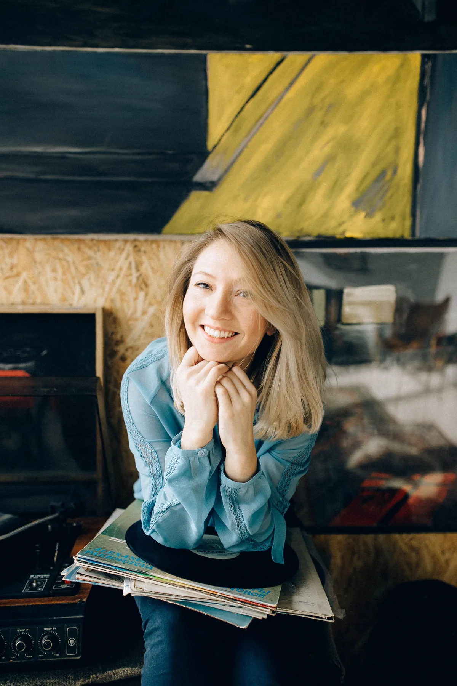
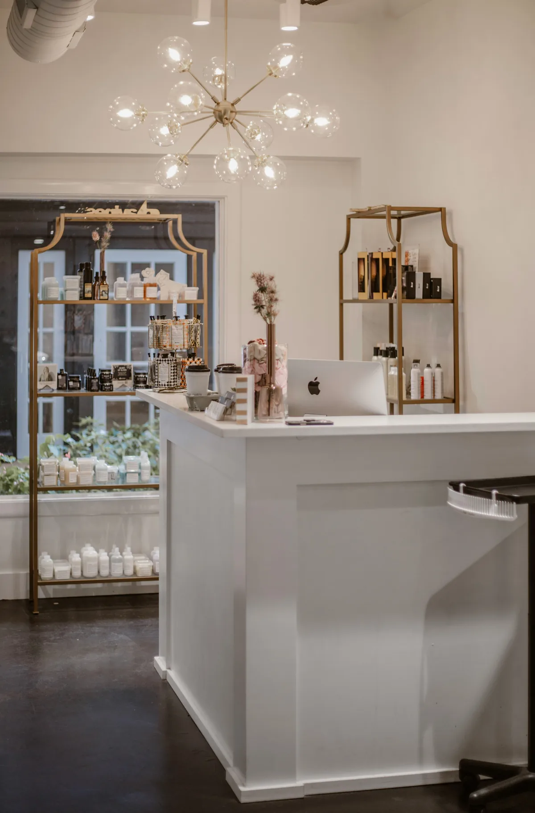

Minőség
Minden kezelés során a legmagasabb minőségre törekszem, mert a bőr egészsége nem kompromisszum kérdése.
Szakértelem, törődés és szenvedély
Sipos Eliza vagyok. Hiszek a gondoskodás erejében és abban, hogy minden bőr megérdemli a személyre szabott törődést. Nálam nincs sablonkezelés, csak valódi odafigyelés.
Időpontot kérek
Az én történetem
A szépség mindig is az életem része volt, így nem volt kérdés, hogy a kozmetika lesz a hivatásom. 2011-ben megnyitottam saját szalonomat, ahol azóta is azon dolgozom, hogy vendégeim bőre ne csak szebb, hanem egészségesebb is legyen.
Az első évek sok tanulással és kihívással teltek, de a kitartásomnak köszönhetően folyamatosan fejlődtem. 2018-ban a Beauty Academy szakmai trénereként és oktatójaként segítettem más kozmetikusokat a korszerű eljárások elsajátításában.
2019-ben mesterkozmetikusi címet szereztem. Hiszem, hogy a kozmetika többről szól, mint a szép bőrről: önbizalomról, jó közérzetről és énidőről is.
A célom, hogy vendégeim feltöltődve és magabiztosan távozzanak.
Sipos ElizaAmi igazán fontos
Minőség, őszinte szakértelem és valódi odafigyelés. Ezekből épül fel minden találkozásunk.
Minden kezelés során a legmagasabb minőségre törekszem, mert a bőr egészsége nem kompromisszum kérdése.
Őszinte szakértelemmel és átgondolt megoldásokkal dolgozom.
A természetes szépség kiemelése és a bőr hosszú távú ápolása a célom.
Folyamatosan tanulok, hogy naprakész tudással segíthessem a vendégeimet.
A kezelés nemcsak a bőrt, hanem a lelket is felfrissíti. Nálam időt kapsz önmagadra.

Profizmus és harmónia
Prémium hatóanyagok, korszerű technológiák és nyugodt, privát környezet. Itt minden arról szól, hogy a bőröd megkapja a megfelelő törődést, te pedig kiszakadhass a mindennapok rohanásából.
1092 Budapest, Ráday u. 1.
Hétfőtől péntekig 9:00–16:00, kizárólag előre egyeztetett időpontban.
Szeretettel várlak
Az első lépés egy beszélgetés. Írd meg, miben segíthetek, és személyesen egyeztetjük a neked megfelelő időpontot.
Kizárólag előre egyeztetett időpontban.
Kérdésed van a kezelésekről, vagy időpontot szeretnél egyeztetni? Írj nekem, és segítek megtalálni a számodra legjobb megoldást.